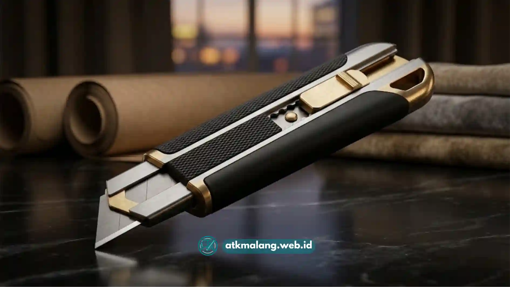

Cara memilih cutter kantor yang tepat adalah dengan menyesuaikan ukuran mata pisau, mekanisme cutter, dan tingkat keamanan dengan jenis pekerjaan yang paling sering dilakukan di lingkungan kerja.
- Kenali jenis bahan yang paling sering dipotong di kantor.
- Sesuaikan ukuran cutter dengan frekuensi penggunaan.
- Pertimbangkan mekanisme retract otomatis untuk keamanan tambahan.
- Perhatikan kenyamanan gagang saat digenggam dalam waktu lama.
- Pastikan isi ulang mata pisau mudah didapatkan.
Memilih cutter kantor bukan hanya soal memilih yang paling murah atau paling mudah ditemukan di toko alat tulis.
Kesalahan memilih cutter dapat memperlambat pekerjaan harian, bahkan meningkatkan risiko cedera ringan bagi penggunanya.
Artikel ini membahas langkah-langkah praktis dalam memilih cutter kantor yang tepat dan sesuai untuk berbagai kebutuhan harian Anda.
Daftar Isi
- Apa Langkah Pertama Sebelum Membeli Cutter Kantor?
- Bagaimana Menyesuaikan Ukuran Cutter dengan Frekuensi Pemakaian?
- Apakah Perlu Memilih Cutter dengan Mekanisme Otomatis?
- Apa Saja Fitur Gagang Cutter yang Perlu Diperhatikan?
- Bagaimana Memastikan Ketersediaan Isi Ulang Mata Pisau?
- Kesalahan yang Sebaiknya Dihindari Saat Memilih Cutter
Apa Langkah Pertama Sebelum Membeli Cutter Kantor?
Langkah pertama sebelum membeli cutter kantor adalah mengidentifikasi jenis bahan yang paling sering dipotong, apakah kertas tipis, kardus, atau bahan campuran.
Kebutuhan staf administrasi yang sehari-hari hanya membuka amplop dan merapikan dokumen tentu berbeda dengan kebutuhan bagian gudang yang harus membongkar puluhan kardus pengiriman setiap hari.
Mengenali kebutuhan ini akan mempermudah menentukan jenis dan ukuran cutter yang paling sesuai.
Bagaimana Menyesuaikan Ukuran Cutter dengan Frekuensi Pemakaian?
Menyesuaikan ukuran cutter dengan frekuensi pemakaian dilakukan dengan memilih cutter kecil untuk pemakaian sesekali dan cutter besar bergagang kokoh untuk pemakaian intensif harian.
Untuk pemakaian sesekali seperti membuka surat atau memotong label, cutter kecil dengan mata pisau 9 mm biasanya sudah mencukupi.
Namun, untuk pemakaian intensif seperti di bagian logistik yang setiap hari memotong lakban dan kardus, cutter dengan gagang lebih besar dan mata pisau lebih lebar akan lebih tahan lama serta lebih nyaman digunakan dalam durasi kerja yang panjang.
Apakah Perlu Memilih Cutter dengan Mekanisme Otomatis?
Cutter dengan mekanisme otomatis perlu dipertimbangkan terutama pada lingkungan kerja dengan banyak pengguna atau mobilitas tinggi, karena mata pisau akan tertarik kembali secara otomatis setelah digunakan.
Mekanisme ini membantu mengurangi risiko cutter tertinggal dalam kondisi mata pisau terbuka di atas meja kerja bersama.
Pada kantor yang menerapkan standar keselamatan kerja lebih ketat, cutter otomatis sering menjadi pilihan utama dibandingkan cutter manual biasa.

Memilih gagang cutter yang ergonomis dan anti-selip menjamin kenyamanan saat pemakaian.Apa Saja Fitur Gagang Cutter yang Perlu Diperhatikan?
Fitur gagang cutter yang perlu diperhatikan meliputi bahan pegangan anti-selip, bentuk ergonomis, dan tombol pengunci mata pisau yang berfungsi dengan baik.
Gagang berbahan karet atau bertekstur biasanya lebih nyaman digenggam dalam waktu lama dibandingkan gagang plastik polos yang licin.
Tombol pengunci juga penting untuk memastikan mata pisau tidak keluar masuk secara tidak sengaja saat cutter disimpan atau dibawa berpindah tempat.
Bagaimana Memastikan Ketersediaan Isi Ulang Mata Pisau?
Memastikan ketersediaan isi ulang mata pisau dapat dilakukan dengan memilih merek cutter yang umum dan mudah ditemukan isi ulangnya di toko Alat Tulis Kantor terdekat.
Sebelum membeli cutter, ada baiknya mengecek apakah ukuran mata pisaunya merupakan ukuran standar yang banyak dijual, seperti 9 mm atau 18 mm.
Cutter dengan ukuran mata pisau yang terlalu unik terkadang sulit ditemukan isi ulangnya, sehingga pengguna harus mengganti seluruh cutter saat mata pisau tumpul, bukan sekadar mengganti isinya saja.
Kesalahan yang Sebaiknya Dihindari Saat Memilih Cutter
Kesalahan yang sebaiknya dihindari saat memilih cutter adalah hanya mempertimbangkan harga termurah tanpa memperhatikan kenyamanan gagang dan ketersediaan isi ulang mata pisau.
Cutter dengan harga sangat murah terkadang menggunakan bahan mata pisau yang cepat tumpul, sehingga justru memerlukan penggantian lebih sering dan pada akhirnya kurang efisien dari segi biaya jangka panjang.
Memilih cutter kantor yang tepat sebaiknya mempertimbangkan jenis bahan yang dipotong, frekuensi pemakaian, kenyamanan gagang, serta ketersediaan isi ulang mata pisau di pasaran. Dengan mempertimbangkan faktor-faktor ini, cutter yang dipilih akan lebih tahan lama dan aman digunakan dalam aktivitas kerja sehari-hari.